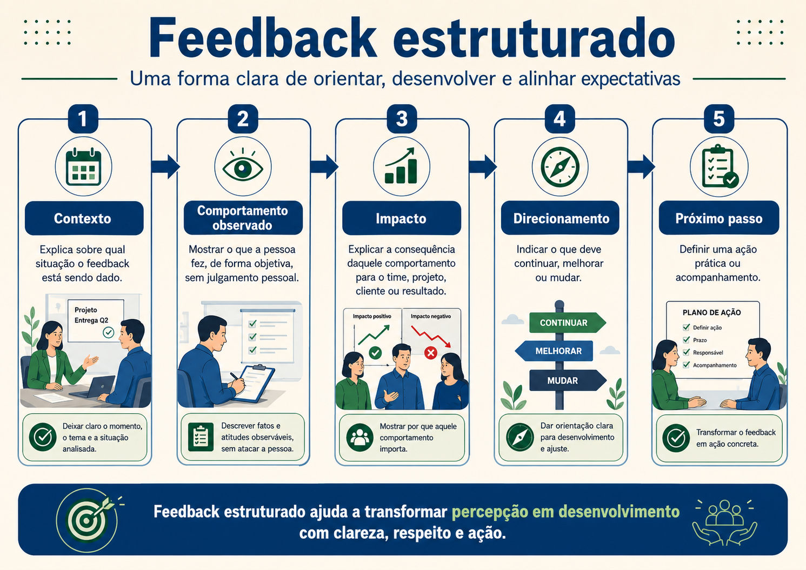
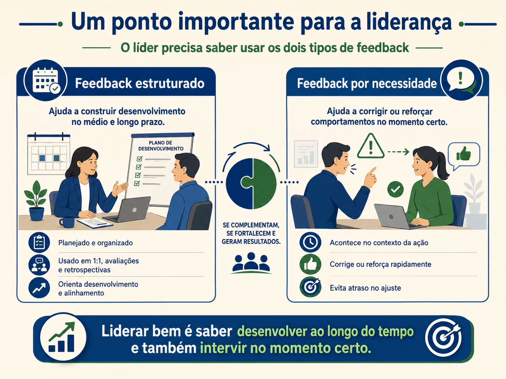
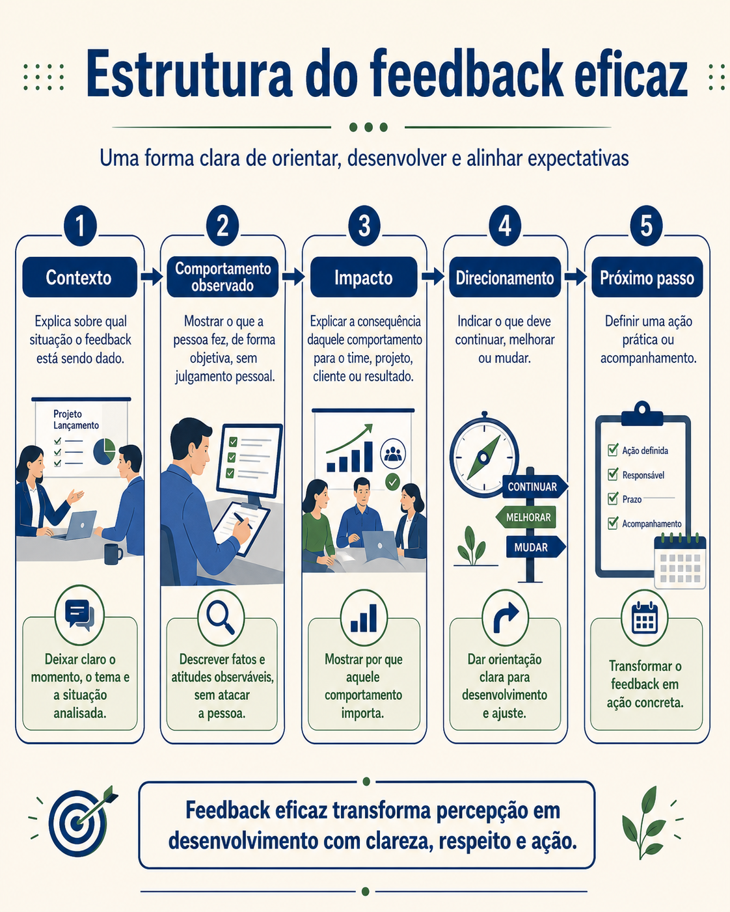
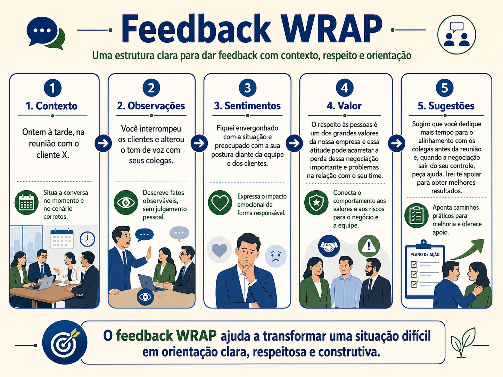

Comunicação não violenta e gestão mais humana
Uma conversa sobre fatos, sentimentos, necessidades, pedidos claros e a evolução da liderança de controle para responsabilidade compartilhada.
Bom dia, pessoal. Imagine que uma pessoa entrega um relatório depois do prazo. A primeira reação de alguém sob pressão pode ser: você sempre atrasa e atrapalha o time. Essa frase parece desabafo, mas não ajuda muito. Ela acusa, generaliza e coloca a pessoa na defensiva. Agora imagine outra forma: o relatório foi entregue depois do horário combinado, fiquei preocupado porque dependíamos dele para fechar a reunião com o cliente. Na próxima entrega, você consegue avisar antes se perceber risco de atraso?
As duas falas tratam do mesmo problema. Mas uma ataca a pessoa, a outra organiza a conversa. É aqui que entra a Comunicação Não Violenta, conhecida como CNV. Ela não é falar fraco. Não é evitar conflito. Não é fingir que está tudo bem. CNV é uma forma de estruturar a fala para tratar o problema sem destruir a relação.
A CNV trabalha com quatro pontos: observação, sentimento, necessidade e pedido. Observação é o fato sem julgamento. Sentimento é o que aquela situação gera em você. Necessidade é o que está por trás do sentimento. Pedido é a ação clara que pode ajudar a resolver.
Pode ficar estranho se for usado de forma artificial ou exagerada. Mas sentimento, aqui, não precisa virar exposição íntima. Pode ser simples: fiquei preocupado, fiquei inseguro com o prazo, fiquei frustrado com a falta de visibilidade. O objetivo não é dramatizar. É explicar o impacto humano e prático da situação.

Vamos separar. Observação sem julgamento é dizer o que aconteceu. “O relatório foi entregue às 16h, e o combinado era 12h” é observação. “Você é desorganizado” é julgamento. A observação ajuda porque dá base concreta para a conversa. Julgamento ataca a identidade da pessoa.
Sentimento é nomear o efeito da situação. “Fiquei preocupado” é diferente de “você me deixou preocupado”. A primeira forma assume o sentimento. A segunda coloca o outro como culpado direto pela minha reação. Essa diferença parece pequena, mas muda o tom da conversa.
Necessidade é aquilo que precisa ser cuidado. Pode ser previsibilidade, alinhamento, qualidade, segurança, respeito ao prazo, clareza com o cliente, confiança no processo. No exemplo do relatório, a necessidade é manter o cronograma e dar informação confiável para a reunião.
Pedido claro é o que a pessoa pode fazer depois. Não adianta terminar com “melhore isso”. Melhorar o quê? Como? Até quando? Um pedido melhor é: quando perceber risco de atraso, me avise até duas horas antes do prazo combinado para reorganizarmos a entrega.
Fato sem julgamento.
Sentimento sem acusação.
Necessidade sem ameaça.
Pedido com ação clara.
A CNV ajuda muito na liderança porque reduz defensividade. Defensividade é a reação de defesa quando a pessoa sente que está sendo atacada. Quando alguém ouve “você sempre atrasa”, tende a se defender: não é sempre, teve tal dia que eu entreguei. A conversa sai do problema e vai para disputa de memória. Quando ouve um fato específico, fica mais fácil olhar para a situação.
Também é importante dizer que CNV não elimina conflito. Ela qualifica o conflito. Conflito qualificado é aquele em que as partes conseguem olhar para fatos, necessidades e acordos, em vez de atacar intenção, caráter ou competência da pessoa.
Agora vamos conectar isso com modelos de gestão. Em uma gestão muito antiga, que podemos chamar de Gestão 1.0, o foco era controle, comando, hierarquia rígida e execução. A pessoa no topo dizia, as outras faziam. Esse modelo conversa pouco com escuta e adaptação, porque enxerga pessoas quase como peças de uma máquina.
Na Gestão 2.0, processos, qualidade e colaboração ganham mais espaço. As pessoas são mais ouvidas, indicadores aparecem, reuniões de melhoria surgem, mas a decisão ainda costuma ficar concentrada. Já na Gestão 3.0, a liderança atua mais como facilitadora do sistema. Ela cria clareza, limites, autonomia e responsabilidade compartilhada.

Por que falar de gestão dentro de uma aula de comunicação? Porque o jeito de gerir aparece no jeito de falar. Um líder de controle tende a cobrar por pressão. Um líder de processo tende a perguntar pelo fluxo e pelo indicador. Um líder facilitador tende a criar clareza, remover impedimentos e fortalecer responsabilidade do time.
CNV combina muito com uma liderança mais madura, porque não tira responsabilidade. Pelo contrário. Ela torna a responsabilidade mais clara. Em vez de “vocês são descomprometidos”, a liderança diz: nas últimas duas semanas, três riscos foram comunicados apenas no dia da entrega. Isso reduz nossa capacidade de agir antes. Precisamos combinar que riscos críticos sejam registrados no mesmo dia em que aparecerem.
Depois da pausa, vamos pensar em como a CNV vira cultura. Cultura é o jeito como as pessoas agem repetidamente, mesmo quando ninguém está fazendo uma palestra sobre isso. Se a liderança fala em fatos, faz pedidos claros, evita generalizações e escuta antes de concluir, o time começa a perceber um padrão. Com o tempo, esse padrão pode se espalhar.
Para virar cultura, a CNV precisa aparecer em rituais. Rituais são momentos repetidos, como reunião individual, daily, retrospectiva, reunião de status, conversa de feedback e alinhamento com cliente. Não adianta usar CNV uma vez em uma situação bonita e esquecer no momento de pressão. O valor aparece quando a técnica é usada justamente quando seria mais fácil reagir mal.
Também precisa aparecer na linguagem padrão. Trocar “quem foi o culpado?” por “o que aconteceu e o que precisamos ajustar?”. Trocar “isso sempre dá errado” por “nas últimas duas ocorrências, tivemos este impacto”. Trocar “melhore sua postura” por “na próxima reunião, preciso que você deixe a pessoa concluir antes de responder”.
A CNV também ajuda em cobrança. Cobrar não é errado. O problema é cobrar sem clareza, sem contexto ou com ataque. Uma cobrança bem feita pode ser: o prazo combinado era ontem e ainda não temos a entrega. Isso impacta o cronograma do cliente. O que aconteceu e qual previsão realista conseguimos assumir agora?
Em feedback, CNV se conecta com fato, impacto e pedido. Em conflito entre áreas, ajuda a separar necessidade de cada lado. Uma área quer velocidade. Outra quer qualidade. Outra quer segurança. O papel da liderança é traduzir essas necessidades para construir acordo, não colocar uma área contra a outra.
Comunicação Não Violenta, leitura recomendada para aprofundar a estrutura de observação, sentimento, necessidade e pedido, sempre com adaptação para o contexto profissional.

Um erro comum é achar que CNV é apenas trocar palavras duras por palavras suaves. Não é isso. Se a pessoa usa uma linguagem bonita, mas continua manipulando, acusando ou escondendo o problema, não existe comunicação não violenta de verdade. A CNV exige honestidade. Ela apenas organiza essa honestidade para que não vire ataque.
Outro erro é usar a CNV como roteiro engessado. A pessoa fala cada etapa de forma mecânica e a conversa parece ensaiada. No começo, até pode ser útil treinar a estrutura. Mas, na prática, a fala precisa ficar natural. O mais importante é a lógica por trás: separar fato de julgamento, reconhecer impacto, deixar clara a necessidade e fazer um pedido possível.
A observação é a parte que mais evita briga. Quando a conversa começa com julgamento, a defesa vem rápido. Quando começa com fato, a pessoa pode até discordar da interpretação, mas existe uma base para olhar. Por isso, antes de uma conversa difícil, anote fatos. Datas, exemplos, mensagens, decisões, combinados. Não para montar acusação, mas para manter justiça.
O sentimento deve ser usado com maturidade. No trabalho, não precisamos transformar toda conversa em desabafo emocional. Mas ignorar completamente sentimentos também não funciona, porque pessoas não são máquinas. Dizer que há preocupação com risco, frustração com retrabalho ou insegurança com falta de informação ajuda a explicar por que o assunto importa.
A necessidade é o coração da conversa. Muitas brigas parecem sobre prazo, mas no fundo são sobre previsibilidade. Parecem sobre relatório, mas são sobre confiança nos dados. Parecem sobre uma reunião, mas são sobre respeito ao tempo das pessoas. Quando a necessidade aparece, a conversa fica mais inteligente.
O pedido precisa estar sob alcance de quem recebe. Pedir “tenha mais comprometimento” é amplo demais. Pedir “sinalize bloqueios no canal do projeto até o fim do dia em que aparecerem” é acionável. Acionável significa que a pessoa consegue fazer ou dizer por que não consegue.
A CNV também ajuda a diferenciar pedido de exigência. Pedido abre espaço para resposta e ajuste. Exigência ameaça. Em liderança, às vezes existe uma decisão que precisa ser cumprida, claro. Ainda assim, a forma de comunicar pode ser respeitosa. A pessoa pode explicar a necessidade, o limite e o motivo da decisão.
Quando vira cultura, a CNV reduz ruído operacional. Pedidos claros reduzem retrabalho. Fatos objetivos reduzem defesa. Necessidades explícitas melhoram priorização. Escuta reduz escalonamento desnecessário. O ganho não é apenas clima. Também é performance.
Um exemplo em reunião de status: em vez de dizer “a área de negócio nunca responde”, a fala pode ser “temos três perguntas de negócio abertas desde terça-feira. Sem essas respostas, o desenvolvimento da funcionalidade X fica parado. Precisamos definir um responsável para retorno até amanhã às 12h”. A segunda fala resolve mais.

Em uma cultura de medo, as pessoas escondem problemas para evitar reação. Em uma cultura com comunicação mais madura, problemas aparecem antes. Isso não significa que todo mundo fica feliz com problemas. Significa que a equipe entende que esconder risco é pior do que trazê-lo com clareza.
A liderança modela isso. Se, sob pressão, a liderança volta para grito, sarcasmo e acusação, o time entende que CNV era apenas discurso. Se, sob pressão, a liderança respira, organiza fatos e faz pedido claro, o time vê um padrão possível de repetir.
Reflexão 21
Transforme a frase “você nunca entrega no prazo” em uma fala usando observação, necessidade e pedido.
Ver uma possibilidade de resposta
Uma possibilidade: nas duas últimas entregas, o material chegou depois do horário combinado. Isso impactou a revisão do time, porque precisamos de previsibilidade. Quando perceber risco de atraso, você consegue sinalizar no mesmo dia para ajustarmos o plano?
Reflexão 22
Escreva uma cobrança de prazo sem usar ataque pessoal.
Ver uma possibilidade de resposta
Uma possibilidade: o prazo combinado para a atualização era hoje às 10h e ainda não recebi o material. Essa informação é necessária para consolidar o status do cliente. Você consegue me dizer o bloqueio e uma nova previsão realista?
Reflexão 23
Pense em uma reunião em que alguém generalizou o problema. Reescreva a fala focando em fatos.
Ver uma possibilidade de resposta
Em vez de “esse time nunca comunica nada”, uma fala melhor seria: nos últimos três riscos críticos, a comunicação chegou apenas no dia da entrega. Precisamos ajustar o fluxo para que riscos sejam sinalizados assim que aparecerem.
Reflexão 24
Escreva um pedido claro e acionável para uma pessoa que precisa participar mais das reuniões.
Ver uma possibilidade de resposta
Uma possibilidade: nas próximas reuniões de status, preciso que você traga seu ponto de andamento em até três minutos, incluindo o que foi feito, bloqueios e próximos passos. Isso dará mais visibilidade ao time.
A CNV não deixa a liderança fraca. Ela deixa a liderança mais precisa. O problema continua sendo tratado, o pedido continua existindo, a responsabilidade continua sendo cobrada. A diferença é que a conversa deixa de atacar a pessoa e passa a organizar fatos, necessidades e próximos passos.